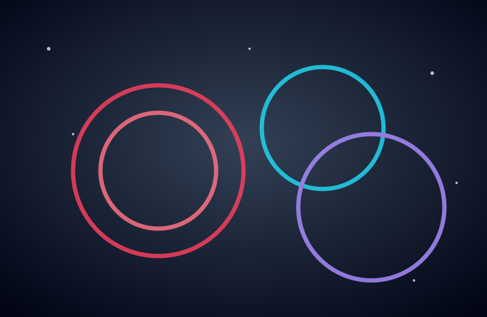
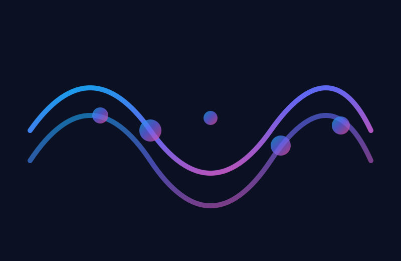

Transporte
Sequenciador de Beats (16 passos)
Kick
Snare
Hi-Hat
Clap
Melodia e Instrumentos
Performance Pads
Dispare one-shots e efeitos ao vivo. Atalhos: teclas 1 a 8.
Gravação de Voz
Use o microfone para gravar vocais, ideias ou samples.
Inspiração Visual
Imagens criativas para entrar no clima de produção.


Dicas Rápidas
- Ative passos no sequenciador para criar grooves em loop.
- Toque a melodia no teclado virtual e troque de instrumento.
- Use os pads para drops, risers e fills ao vivo.
- Grave sua voz por cima do beat e exporte o áudio gravado pelo player.